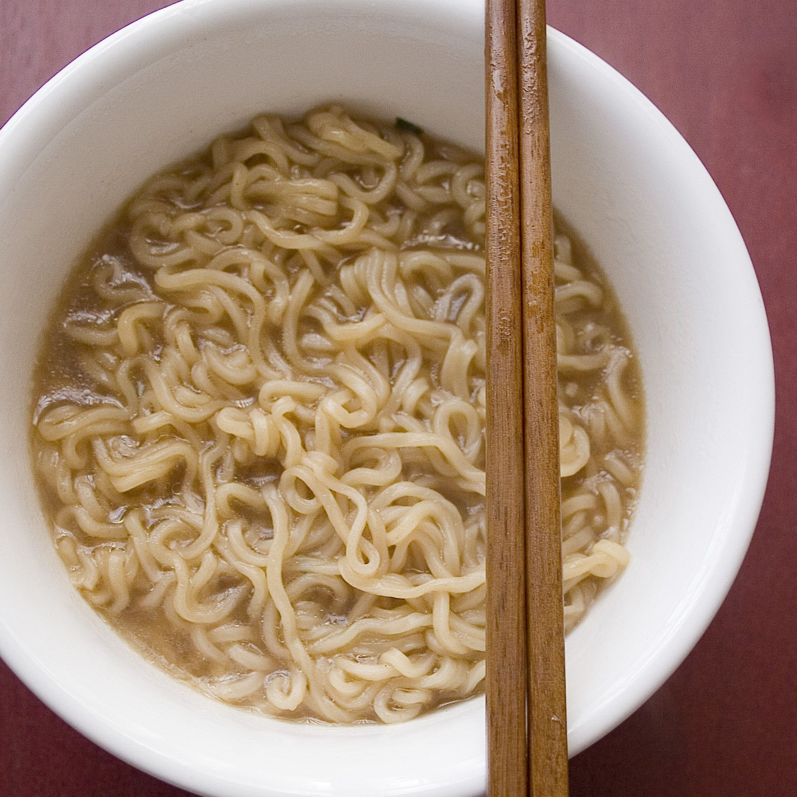

How to Make Basic Ramen

Preperation Time: 10 Mins
Cooking Time: 10 Mins
Ingredients List:
- 4 cups vegetable broth
- 4 cups water
- 1 tablespoon soy sauce
- 1 cup sesame oil
- 1 tablespoon ground ginger
- 1 tablespoon hot sauce
- 9 ounches soba noodles
Direcitons:
- Combine broth, water, soy sauce, sesame oil, ginger, and hot sauce in a pot; bring to a boil
- Add noodles to boiling broth mixture and cook until noodles are tender yet firm to the bite, 5 to 7 minutes
- Transfer noodles to serving bowls and top with desired amount of broth.
- Enjoy!
Return to Index